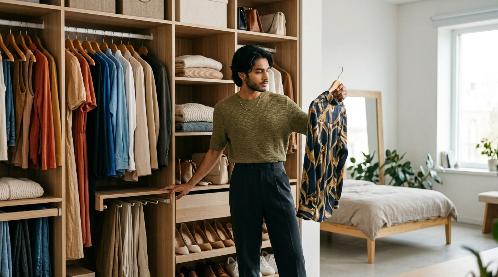
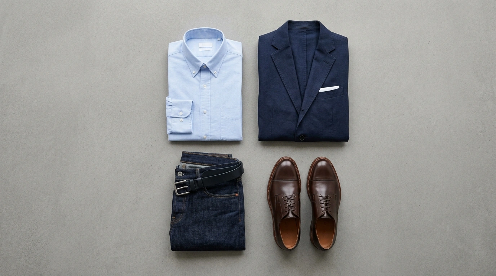

Published: August 13, 2026 • Masterclass Guide
How to Create Outfits From Clothes You Already Own

START → BUILD → CHECK → ADAPT → REPEAT
You don't need a new wardrobe to unlock fresh outfits. Learn how to stop viewing garments in isolation and start building complete combinations from your existing closet.
You do not need a completely new wardrobe to discover fresh, stylish outfits every morning. Most people believe that having nothing to wear requires another trip to the mall or adding new items to an online cart. But the easiest way to multiply your style options is to stop evaluating garments individually and start building complete combinations from what you already own.
Think about it this way: one shirt is not an outfit. One pair of trousers is not an outfit. One coat is not an outfit. An outfit comes into existence only when these pieces interact—sharing colour harmony, visual proportions, and occasion context.
This practical guide teaches a repeatable, step-by-step method for building outfits from your existing wardrobe—giving you complete confidence every time you get dressed.
How Do I Create Outfits From Clothes I Already Own?
To create outfits from clothes you already own, select one anchor piece (like a shirt or trousers), build a base using the Top + Bottom + Footwear formula, bridge strong colours with neutrals (navy, cream, beige), and adapt the look's formality using shoes and layering.
Start With One Piece, Not the Whole Wardrobe
Staring into an open closet packed with dozens of hangers causes instant choice overload. Your brain attempts to calculate all possible combinations simultaneously, leading to decision paralysis.
The solution is to narrow your focal point immediately. Choose ONE starting piece—a navy linen shirt, a pair of grey chinos, a printed skirt, or a favorite blazer—and construct your entire look around that single anchor.
Starting Piece: Classic Navy Linen Shirt
Beige chinos, dark denim, or grey trousers.
Brown loafers or clean white leather sneakers.
An unbuttoned cream cardigan or olive jacket.
Build the Basic Outfit Formula
Every successful outfit follows a simple visual architecture. Memorize this 2-stage formula to build outfits systematically:

Choose a Colour Foundation
Colour harmony does not require complex color-wheel math. A dependable colour relationship uses three simple tiers:
THE 3-TIER COLOUR FORMULA:
Navy + Cream + Brown
Classic, foolproof contrast. Deep navy top, cream chinos, and warm brown leather loafers.
Olive + Beige + White
Earthy, relaxed harmony. Olive overshirt, white tee base, and beige trousers.
Black + Grey + Burgundy
Sleek urban combination. Black knit polo, grey tailored trousers, and deep burgundy footwear.
Use Neutrals to Make Mixing Easier
Neutrals—including white, cream, beige, grey, navy, black, and brown—act as visual bridges. When you own clothes with bold patterns or saturated colours, inserting a neutral garment reduces visual noise and connects the outfit.
For instance, a vibrant patterned floral or ethnic shirt can feel overwhelming when worn with bright coloured trousers. Pair that same shirt with plain navy chinos and white sneakers, and the outfit becomes balanced and intentional.
Add Shoes Last More Often Than You Think
Footwear is rarely an afterthought—it dictates an outfit's overall formality level. You can wear the exact same base combination (navy shirt + beige chinos) and completely transform where the look belongs simply by switching your shoes:
Casual Vibe
Perfect for weekend cafe visits, travel, or informal day outings.
Smart Casual
Ideal for office workdays, client meetings, or dinner dates.
Business Formal
Elevates the combination for formal presentations or evening functions.
Think About Proportion and Silhouette
Color harmony alone cannot save an outfit if the silhouettes fight each other. Silhouette balance is about visual weight counterweights:
- • Relaxed Top + Tapered Bottom: A loose sweater or relaxed shirt looks balanced over slim or tapered trousers.
- • Fitted Top + Wide Bottom: A tucked-in fitted top balances wide-leg palazzos or wide trousers.
- • Cropped Layer + High-Waisted Bottom: Lengthens leg proportions without sacrificing structure.
Match the Outfit to the Situation
An outfit must make sense in its environment. Adapt your base combinations according to these common situational contexts:
Work & Office
Structured collared tops, tailored bottoms, clean loafers or formal shoes.
Casual Day & Errands
Breathable tees, dark denim or chinos, comfortable white leather sneakers.
Dinner & Social
Polished layers (blazer, cardigan), jewel-tone accents, leather footwear.
Use One Piece to Create Multiple Outfits
To prove how versatile a single garment can be, look at how one Navy Blazer connects three completely distinct outfits:
Navy Blazer
+ White Shirt
+ Beige Chinos
+ Brown Loafers
Navy Blazer
+ Plain Crew T-Shirt
+ Dark Denim Jeans
+ White Sneakers
Navy Blazer
+ Fine Knit Polo
+ Grey Trousers
+ Leather Oxfords
Try the “One Change” Method
Instead of re-inventing an outfit from scratch every morning, start with a base outfit you already know works. Then change only ONE variable:
- • Swap the shoes: Replace brown loafers with white leather sneakers for an instant casual pivot.
- • Add an unbuttoned layer: Throw an olive overshirt or jacket over your base t-shirt.
- • Swap the trousers: Change beige chinos for dark indigo jeans while keeping the top and shoes.
How to Know When an Outfit Works
Run through this quick 6-question diagnostic checklist before heading out the door:
- Do the colours feel intentional and complementary?
- Is the light-to-dark contrast balanced against your complexion?
- Do the silhouette proportions feel coordinated (fitted vs. relaxed balance)?
- Is the formality consistent across top, bottom, and shoes?
- Does the outfit suit your scheduled occasion and weather?
- Does the footwear make logical sense for the overall look?
To learn how colour palettes match your skin tone, explore AI Personal Colour Analysis →. To automate outfit combinations automatically, explore our AI Outfit Planner →
What If You Can't Find a Combination?
If you still struggle to build combinations, one of three factors is usually at play:
- Lack of Visibility: Your clothes are hidden behind dark drawers or overstuffed racks.
- Under-Experimentation: You haven't tried swapping individual pieces systematic.
- A Genuine Wardrobe Gap: You are missing a key neutral connector (like a versatile white shirt or beige chinos).
Creating a digital inventory solves the visibility problem by letting you view all your clothes on your smartphone. Discover how to organize your closet with a Digital Wardrobe →
When You Really Are Missing a Piece
Sometimes, after evaluating your wardrobe, the answer actually is that you need a new connecting item. But before purchasing, ask yourself:
- • What exact garment type or colour is missing?
- • How many existing items in my closet can this new piece pair with?
- • Does it work for more than one occasion context?
Learn how to evaluate potential new clothes before buying with Scan Before You Buy →
A 10-Minute Outfit-Building Exercise
Put this guide into action right now with a 10-minute closet exercise:
THE 6-PIECE OUTFIT CHALLENGE:
Pull these 6 items out of your closet right now:
Recombine these pieces into 3 distinct looks (Look A, Look B, Look C). Snap photos of them on your phone for morning reference!
The Goal Is More Wear From What You Already Own
The objective of wardrobe styling is not to create hundreds of theoretical combinations you will never wear. The goal is to build a reliable set of useful, comfortable, appropriate, and cohesive outfits from the clothes you already own.
If you want to digitize your closet inventory and automate outfit generation on your smartphone, Colourity integrates your personal colours, digital wardrobe, outfit planner, and shopping scanner into one effortless Android mobile app.
Related Masterclass Guides
Outfit Building FAQs
Start by selecting one anchor garment (like a navy shirt or tailored trousers), then apply the basic formula: Top + Bottom + Footwear + Optional Layer. Use neutral bridging colors (cream, grey, navy, beige) to connect pieces smoothly.
Use the 'One Change' method: take an outfit that already works and swap just one variable—such as changing your shoes from loafers to white sneakers, or replacing a jacket—to instantly unlock a fresh look without buying new clothes.
Mix and match by pairing one primary color item with one supporting neutral and an optional accent piece. Keep formality levels within adjacent categories (e.g. smart casual with business casual) to avoid styling friction.
Clothes go together when their colors harmonise in undertone (warm vs cool), contrast levels match your personal skin tone, silhouette proportions are balanced (e.g. relaxed top with slim bottom), and the overall formality suits the occasion.
Conduct a 10-minute wardrobe exercise: pick 1 top, 2 bottoms, 2 shoes, and 1 layer. Recombine these 6 pieces into at least 3 distinct outfits for different occasions without spending anything.
Step 1: Pick one anchor piece. Step 2: Add a complementary top or bottom base. Step 3: Choose footwear based on occasion formality. Step 4: Add an optional layer or accessory for depth. Step 5: Check color harmony and silhouette proportion.
Create Outfits From Your Wardrobe
Download Colourity on Android to digitise your closet and generate outfits for free.
Get Colourity AppRather than planning each combination manually, Colourity's Outfit Planner does this pairing work from your own wardrobe.
Once you own a few of these pieces, a digital wardrobe makes it far easier to remember what you actually have.
Related reading: I Have Clothes but Nothing to Wear: What’s Actually Going Wrong? · 7 Garment Color Formulas to Mix & Match Indian Clothes You Already Own · Why Do My Outfits Look Bad Together? 7 Reasons Your Clothes Don't Feel Right